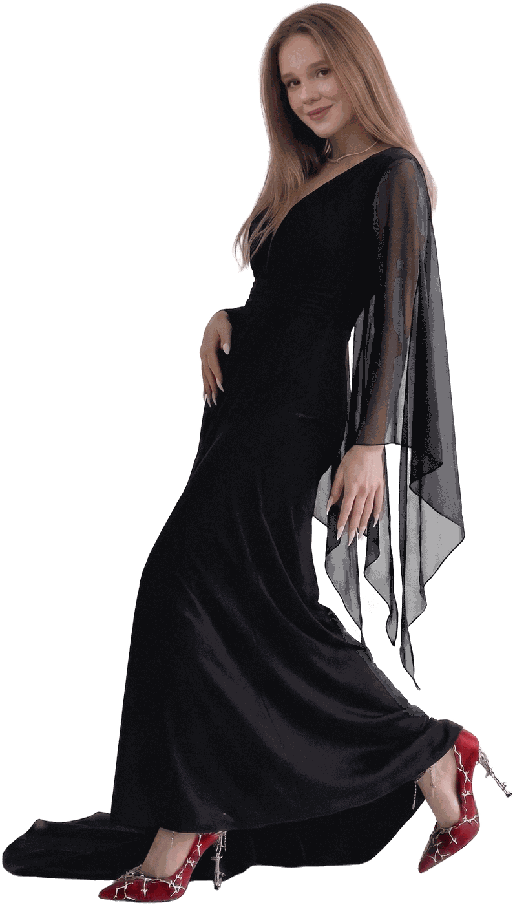

«Снимаю выпускников, как для глянцевых журналов: живые кадры,
стильная обработка, никаких скучных поз “у доски”
Каждому помогаю с позами и образом, чтобы вы чувствовали себя
комфортно, без ощущения скованности и “не фотогеничности”
А в дизайне альбомов не использую стандартные шаблоны “как у всех”
Каждую страницу собираю индивидуально вместе с вами»

30–40 полных разворотов
7–8 полных разворотов
30–40 полных разворотов
7–8 полных разворотов